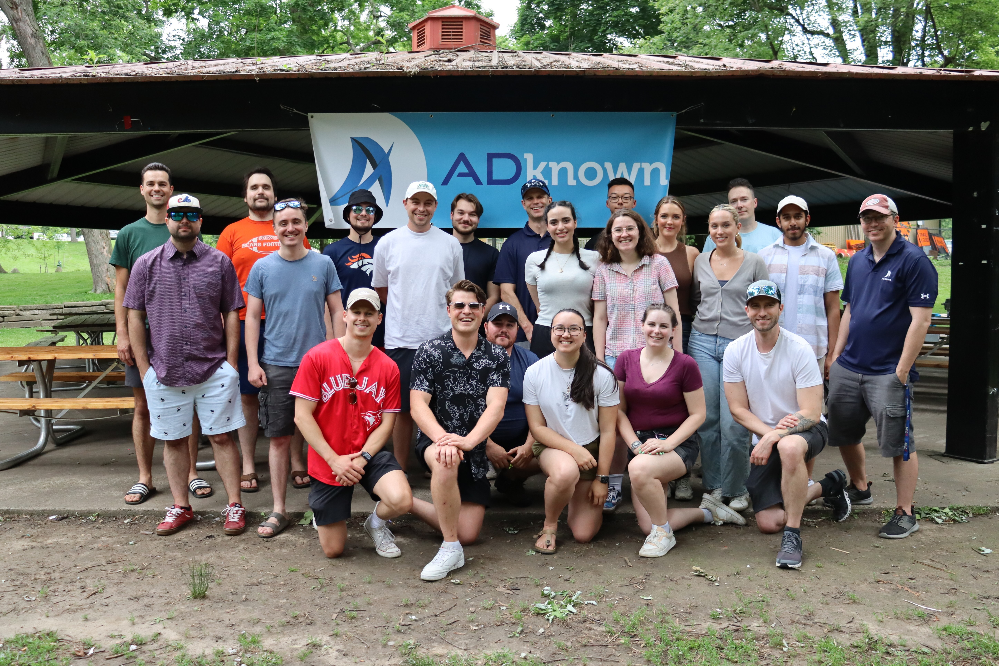

Introduction
This past summer I completed my third co-op work term as a software developer intern with Adknown Inc. The following report summarizes the work I did for this term including job responsibilities, skills learned, and how those skills will benefit my future educational, occupational and personal pursuits.
About my Employer - Adknown Inc.
Adknown Inc. is a self-proclaimed "cutting-edge online media company." Located in the heart of downtown Guelph, they are known by the local University of Guelph for providing co-op opportunities to computer science and business students.
While their focus is in the marketing field, primarily in advertising technology and web publishing, they have a team of developers working on in-house tools that are essential to everyday workflow.
Adknown tries to be on the cutting edge of all web technology, from advertising tools to more general solutions like AI and web scraping. The company adopts a "fail faster" mentality: a curious and fast-paced climate that ensures that something new is always being developed, that there is always more to learn, and that solutions from previous projects are carried forward to inform and improve choices made in the future.
Adknown's employees, many of them UoG alumni, collaborate to build ground-up solutions for their ambitious advertising campaigns, search portals, web publishing blogs, and more.
Job Description
This work term featured a fast-paced environment with many different tasks across an array of projects. Technical skills required involved PHP, Git, WordPress and AWS. While I had little experience with most of these (barring git) in school, the coding and learning abilities I have developed in class gave me a solid jumping off point to start with. I was able to effectively use independent search and LinkedIn learning to develop further knowledge, as well as gaining hands-on experience within the job itself.
Non-technical skills included effective communication, creativity, time management and independent work. These are all skills that I have developed both in-class and in prior work terms, and gained more experience with this term. The many projects that I worked on within four months demanded the ability to quickly learn new skills and frameworks, including ones that hadn't been used by the company before. This put me in a unique position where I gained experience writing documentation and instructions to help guide future work on team projects.
WordPress
My first project served as an introduction to the company's many web publishing pursuits. I was required to design and implement WordPress components for a new product site. As the culmination to this work, I used AWS LightSail to start up an entirely new server for future web applciations.
Sapphire
Sapphire is the company's internal management software, used to create custom ads for platforms such as Google and Facebook. I was able to hone my PHP skills to connect between frontend and backend, adding new functionality that saw immediate use from my fellow employees. For example, I added the ability to add and crop multiple images, as well as uploading previous images to new ad campaigns.
Web Scraping
In preparation for a new project involving data aggregation, I was required to use multiple tools to automate the scraping of data across multiple websites. I not only did this work myself, but I also used technical writing skills to develop instructions and example data sets for other workers to increase efficiency of results.
Web Design and Implementation
I was able to practice custom component design for a brand new website, as well as implementing flats into a working application. I learned to use the Laravel framework to combine HTML with PHP, Tailwind CSS, raw Javascript and Alpine.JS to quickly implement a clean, responsive website during the last month of my work term. Additionally, I provided documentation through Confluence to assist in future use of the framework.
Learning Goals
The wide variety of tasks I was given this term allowed me to dabble in many technical skills including web design, web scraping, and documentation, while also rounding out transferable skills like communication and independence. My initial goals were developed relating to my first few weeks of job experience. Because the needs of this workplace were constantly evolving, however, some of my initial goals were less relevant than initially expected. Regardless, I met each goal to the best of my abilities and was able to expand upon my knowledge in other areas, finding additional topics of interest throughout the term.
My primary interest this summer was to learn more about the different aspects of (and technologies used in) web development. Many of the skills I hoped to develop were related to frontend, from cloud computing to languages like PHP. In this area I feel that I have made huge strides, advancing my skills at both designing and implementing web applications and furthering my passion for the field.
1 Understand and effectively utilize cloud-based web services (namely AWS) to deploy and manage applications
Given the job description and my first few weeks working with AWS as a host for web applications, I knew that learning cloud-based web services would be relevant to not only my job, but my future in web development as a whole. The shift in web development to cloud storage platforms demands an understanding of web services like AWS to quickly host web servers.
This work term, I sought to conduct personal research through Youtube tutorials and LinkedIn learning to understand the basics of how cloud computing works, with a focus on AWS LightSail. I hoped to take extensive notes to familiarize myself for future projects and grow comfortable using AWS services without guidance.
Reflection: I researched the basic fundamentals of AWS and cloud-based web services using online tools such as Youtube and LinkedIn learning, taking notes on the subject. I quickly became comfortable with using Amazon Lightsail and was even able to create a new server using AWS tools and guidance from my manager. Unfortunately my work with AWS was limited to this, so I feel that there is still much to learn about the subject. This work term served as a good introduction to the topic and has me interested in taking courses or practing further to help me understand this technology. Knowing how important cloud-based web architecture is in the modern web, I look forward to learning more in order to pursue future projects and work opportunities with the confidence needed -- and term I have taken a step in the right direction.
2 Improve ability to speak independently and bring unique perspectives and solutions to the table
The frequent context-switching and eccentric nature of this experience lent itself well to creative and independent solutions. This term, I tried to focus on bringing my own solutions to the table and trusting my experience in both design and programming to lead me to a solution independently. On the other hand, it is important to collobarate with team members and ensure solutions are viable and understood by all contributing members.
I came to the conclusion that a good balance is struck with the following criteria: - Speak up, ask questions, and provide personal knowledge to discussions - Check in with supervisors or related parties frequently and when confused - Keep notes on meetings for future reference and understanding
Reflection: Thanks to consistent meetings with my supervisors and diligent note-taking of daily tasks, I feel I was able to succeed in this goal. My last project especially gave me the chance to do independent research and pass along my unique knowledge through the creation of Confluence documents, while still allowing me to fall back on my peers for assistance with sticking points and confusing errors. The action plan I laid out in my Learning Goals guided me to become comfortable speaking up about ideas and issues in a workplace setting and bringing creative solutions to the table. Developing these skills has increased my confidence in being able to bring valuable information to future group projects, job prospects and in everyday life.
3 Improve web design skills and become proficient with WordPress

WordPress is a widely-used used Content Management System (CMS). It is valuable to know how to use programs like these to build and host websites easily and efficiently. I had never used WordPress before my work term, but I was interested in its ability to simplify the web design process. My first job tasks related to WordPress were the perfect opportunity to improve my website-building skills. On a broader scale I hoped to improve my web design skills in general, using the efficient tools WordPress provides to take more time developing an interface that provides a pleasant user experience.
Reflection: I was given the chance this term to improve my web design skills in multiple ways. Firstly, I was able to practice implementing flats and drawing inspiration from web components on popular sites like Buzzfeed's article page. This practice familiarized me with common web styling used to create a clean and understandable user experience. Additionally, I had the chance to design paper prototypes for custom components. These prototypes were implemented both in WordPress and a custom website layout using the Laravel framework.
The opporunity to practice web design in such a wide variety of ways has provided me with a versatile skillset: technical knowledge for languages and frameworks such as Laravel, PHP, Tailwind, and Alpine.JS, web design fundamentals like responsiveness, and transferable skills in problem solving, visual design, and communication. While WordPress itself only featured a small portion of my tasks this term, the web design skills I gained reach far beyond a specific content management system and have bolstered my confidence in being able to implement web solutions in general across an array of technologies and platforms.
4 Improve note-taking and documentation skills
While I have kept up well with taking notes in class and prior work terms, I found I often overestimated the amount of information I needed to note down. The result was a notebook cramped with notes I didn't need, and it was often time-consuming to sift through to remember what I actually needed to know. This work term, I planned to be more concise and clear with my notes to better track my progress. I expected that creating documentation for my code would assist in this.
Reflection: With a focus on clear and concise note-taking. I avoided repeating information or "padding out" my notes with unnecessary detail. As a result, I was able to easily compile the information I learned this term into a confluence document to pass my knowledge on to other employees. This document will assist others in onboarding for the project and for efficient development once set up.
An area that I can still improve in is commenting and document the actual code files I work on as I go. It can be difficult to remember to do in the moment, but can lead to confusion for both myself and others later on. I hope to address this in future projects and work terms, as this will increase readability and help me communicate with my peers.
5 Become proficient in PHP
PHP is the main language used in most of Adknown's projects. I had never used PHP before, but I knew that it was an important language in web-development with stacks like LAMP (Linux, Apache, MySQL, PHP), so I resolved to make the most of this term and become as comfortable with PHP as possible. To do this, I planned to: - Take notes on parts of PHP that are unique - Research or ask questions on any confusing elements - Make efforts to code efficiently and effectively
Reflection: I was fully immersed in PHP-based tools this semester. Introducing myself to the language through online learning sites was a helpful introduction, but most of my skills came from actively coding in the language for four months.

As a result, I was able to quickly pick up the language and use it to my advantage. Clear note-taking was key to understanding larger projects like Sapphire. I feel that my ability to quickly and effectively pick up new PHP projects demonstrates my newfound confidence with the language.
In addition to PHP, I had the ability to learn and document my experiences with Laravel, a PHP framework. I greatly enjoyed learning about features like Laravel's blade templates and coming up with creative solutions by exploring the framework's capabilities. I look forward to using this framework in future projects, and would love to use it more for work in the future.
Further Reflection
I developed this term's learning goals with the first few weeks of my work term in mind. As such, the skills I hoped to develop aligned closely with the onboarding tasks I was given. However, this term taught me much more than the few goals that I made. The past four months have improved my communication skills, given me more independence and confidence, and made me more adaptable to fluid situations where one specific solution may not always apply. These skills are not easily learned in a class setting, so this work term proved to be an invaluable experience.
My tasks introduced me to lightweight, "easy" frameworks like TailwindCSS and Alpine.js, designed to be as simple to introduce into web applications as possible. While I enjoy working in web development as a whole, these frameworks interested me with their simplicity and small amount of overhead. In my search to learn more about this facet of web design, I came across interesting articles that made me more aware of the current web development climate beyond education and internships, including the bloat in many modern web applications. I am interested in further researching this topic and its implications in modern web design.
My enjoyment with these new frameworks inspired me to redesign this blog using only raw HTML, Tailwind, and AlpineJS. I can safely say that I feel comfortable adapting projects to different languages, designing visually appealing and informative web pages, and implementing my ideas in an efficient manner. After transforming my work term blog into something I can really be proud of, I have no doub that these skills will benefit me in future projects and career opportunities.
...I also learned that I'm very bad at cornhole.

Conclusion
My experience this summer has gone far beyond the workplace and my initial goals. After this term, I have become far more confident in my ability to provide creative and effective solutions in an efficient manner, to learn with or without guidance, and to feel more comfortable advocating for myself and my solutions. Both the technical and transferable skills I have gained or improved this semester have opened my eyes to the depth and complexity of a vast field, which I hope to explore more in future classes and job opportunites.
Special thanks to Laura Gatto, co-op coordinator at the University of Guelph, for her assistance and support in finding a career path that interests me.